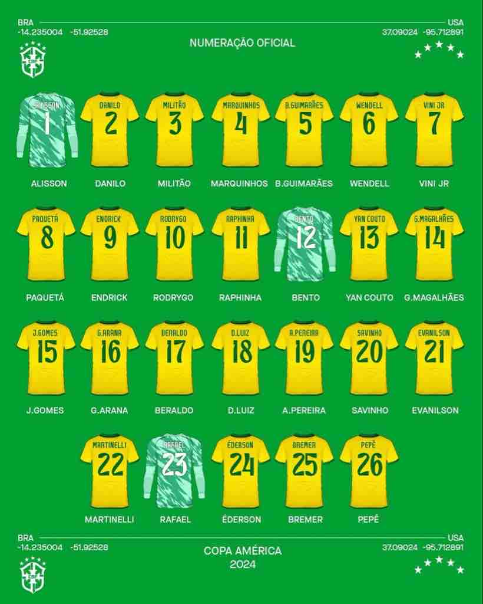
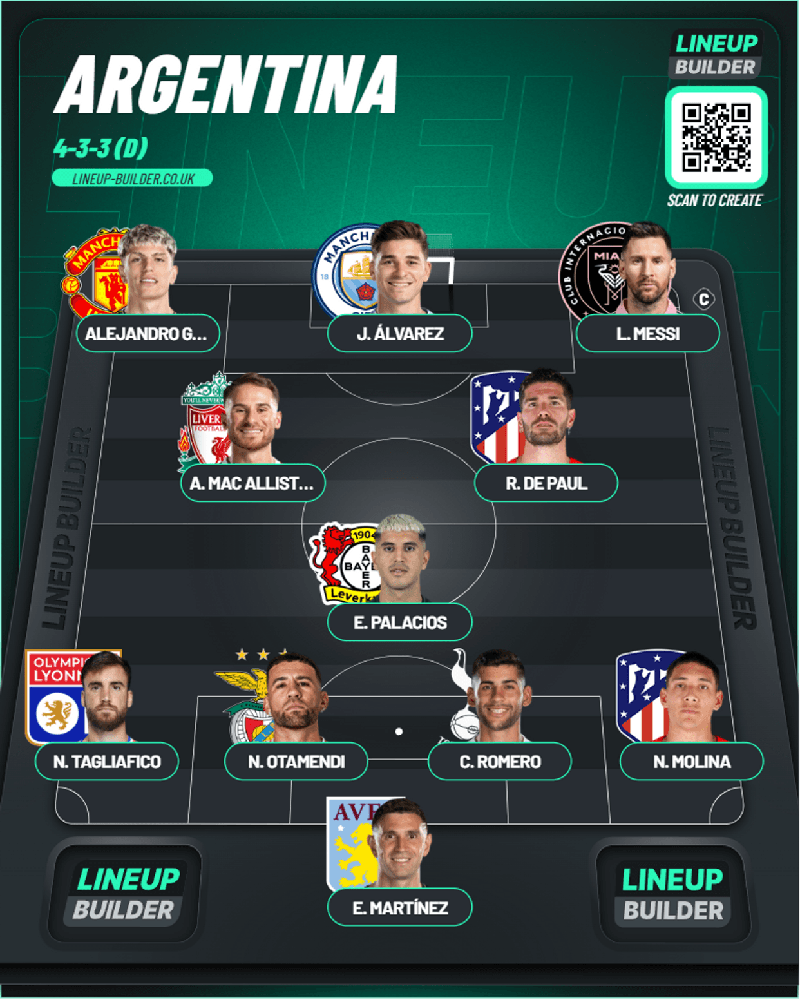
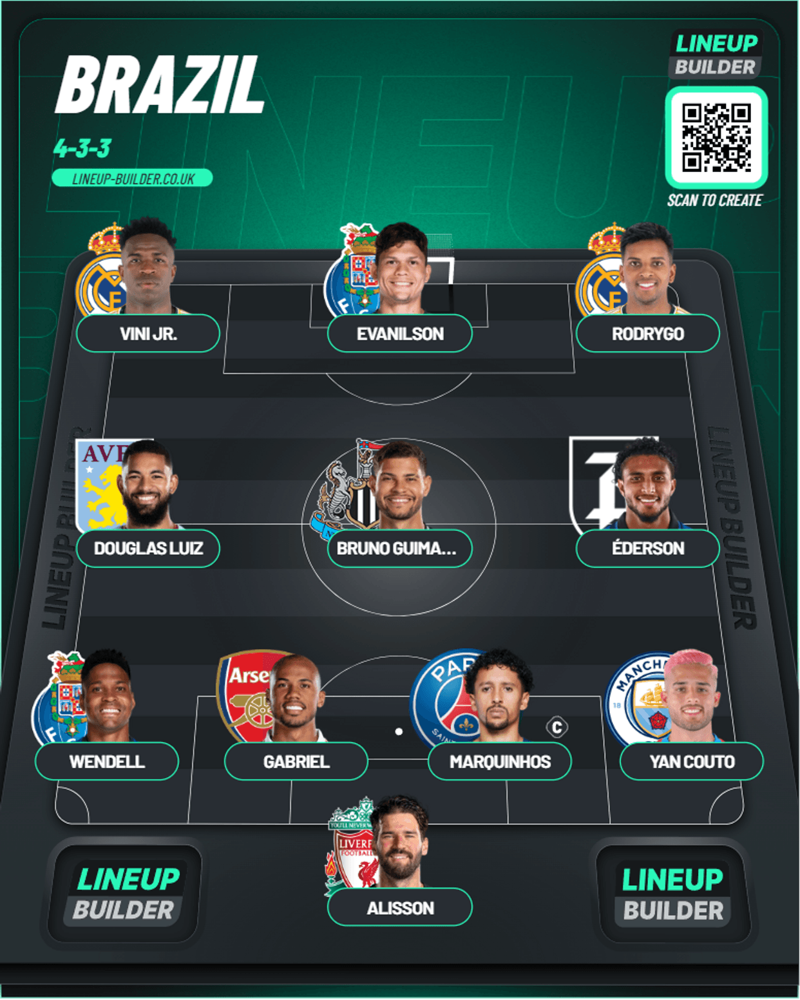

Squad Reaction - Brazil and Argentina
Table of Contents
Squad Reaction - Brazil and Argentina

These guys are the main teams in this tournament even though you’ve got good talent in some teams, you really can’t go past these 2 to be the favorites. But I think Argentina are more higher favorites than Brazil because in my opinion this Brazil squad has taken a huge hit and without Neymar as well(I can understand it because he was mostly injured but still he’s a solid person to have in the dressing room for the youngsters), I think they have good quality with the likes of Vini Jr and Rodrygo and even Endrick. We’ll know more when the tournament comes around. Let’s see
Argentina
I think I’d say it’s a fairly good squad from what I can see. Will Messi lead them to a second Copa America as the defending champions? I don’t see why not. You’ve got the highly dependable Emi Martinez between the sticks. You’ve got Molina who’s a really good talent in the RB position and dependable CB’s in Romero and Otamendi(I want to use Lisandro Martinez but he’s slowly coming back to full fitness. He could make a start happen mostly) and experience in LB with Acuna and Tagliafico and up and comer Valentin Barco as well. In midfield you’ve the emergence of Exequiel Palacios from Leverkusen and also Mac Allister who’s had a storming debut season for Liverpool and also Messi’s bodyguard on the pitch De Paul. In attack Messi will lead them out from the right most probably and on the left you’ve got options such as Di Maria, Gonzalez, Correa and finally in ST I think you definitely have to stick by Alvarez because of him being a revelation in the World Cup even though he was mostly a bit part player for CIty. I know Lautaro Martinez has been solid leading Inter to a Scudetto but I wouldn’t have faith in him after his botch job 2 years back. Let’s see
Brazil
It’s sad to see so much change with this team I loved watching as I grew up with the likes of Kaka back then(It was towards his twilight but I did see him a few times in 2010), Neymar in 2014, 2016, 2018. Now we’re seeing a new shift in the players with the likes Endrick who’s a new Real Madrid recruit, Vini Jr and Rodrygo who have had superb seasons with Real Madrid as well. I wouldn’t say hope is completely lost. You’ve got really good talent who can come good but the pressure of Brazil is always a different level. Ask Neymar. You’ve got Allison who’s a steady pair of hands. In defense you’ve got an able leader in Marquinhos and the other side could be really good with Gabriel after his solid season with Arsenal. You’ve got other options in Bremer and Militao. In the RB spot you’ve Yan Couto who’s a good youngster with a solid season for Girona. At LB, we’ve got alright options with the likes of Wendell and Arana who’ve had rather good seasons or even Danilo who could play there. In midfield, I think Bruno G and Douglas Luiz are solid options to have with also Lucas Paqueta as well to back it up. You’ve got Ederson as well who’s had a great season with Atalanta(Europa League winners) and was rewarded with the late call up. You’ve also got Andreas Pereira who’s been called up. It’s an option so I’m not too fussed. Then coming to the attack, you’ve got Vini and Rodrygo who are locked in there. For backup you’ve got Martinelli and Savio who have had really good seasons for Arsenal and Girona respectively. Then for the ST I think you can’t look past Endrick and you’ve also got Evanilson for a bit of height.
Lineups I’d go with
Argentina

Brazil
Sadly I couldn’t get Arana and Endrick into this because they weren’t present in the DB 😅
